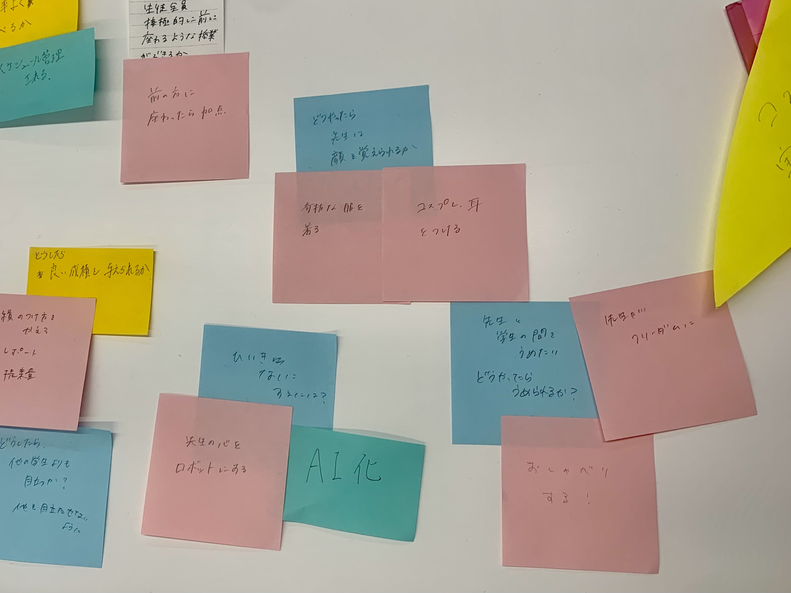
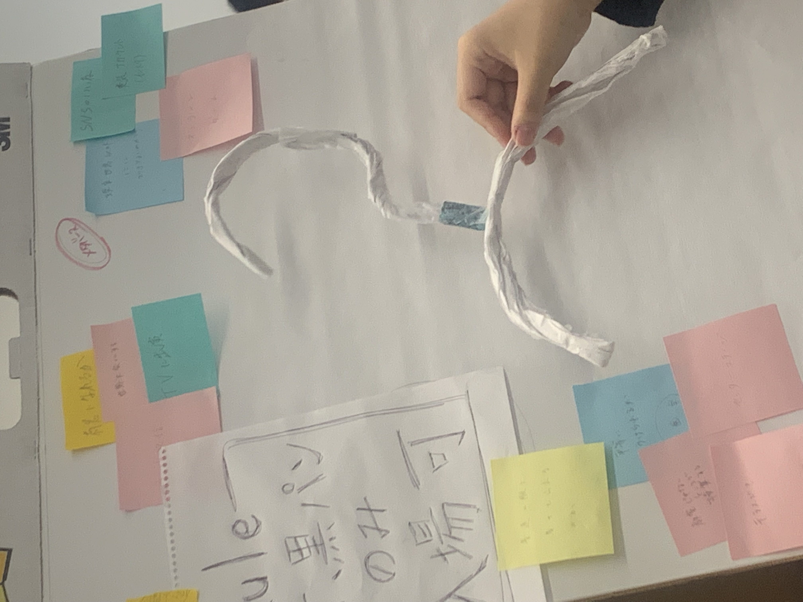
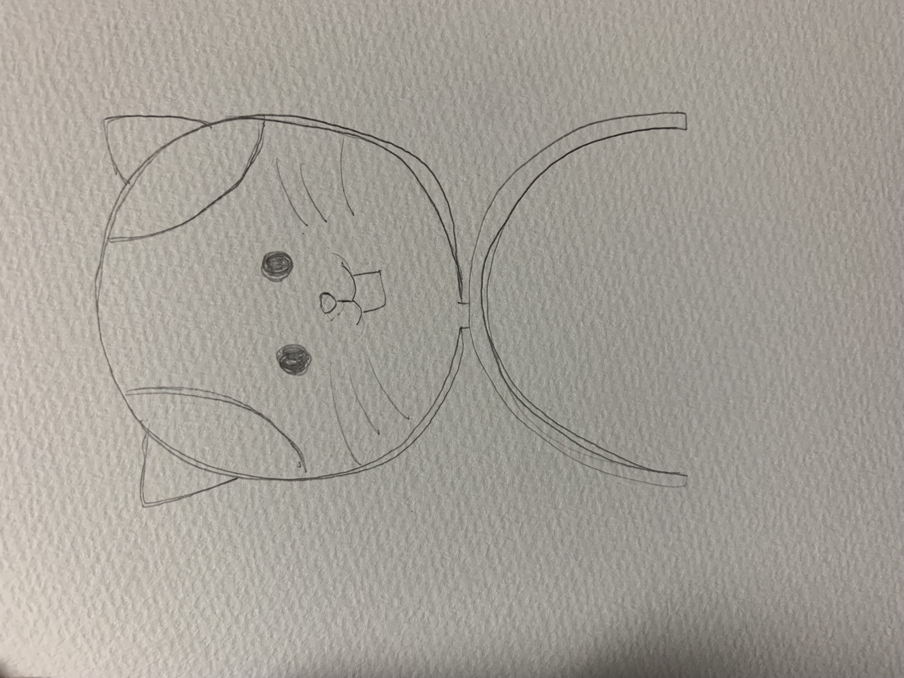
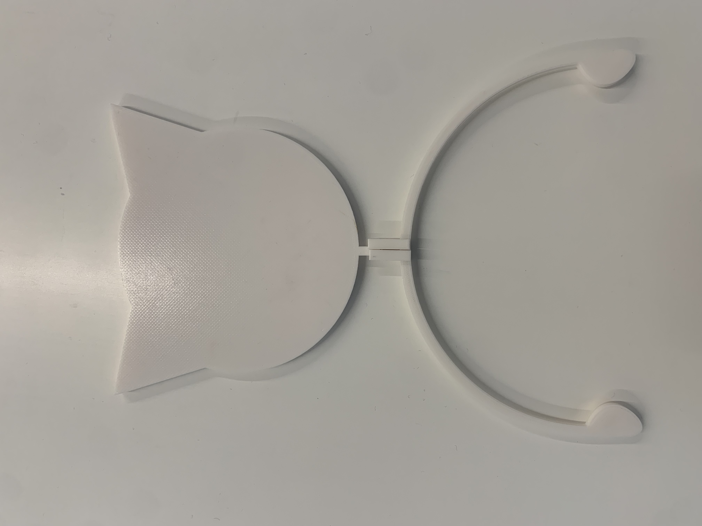
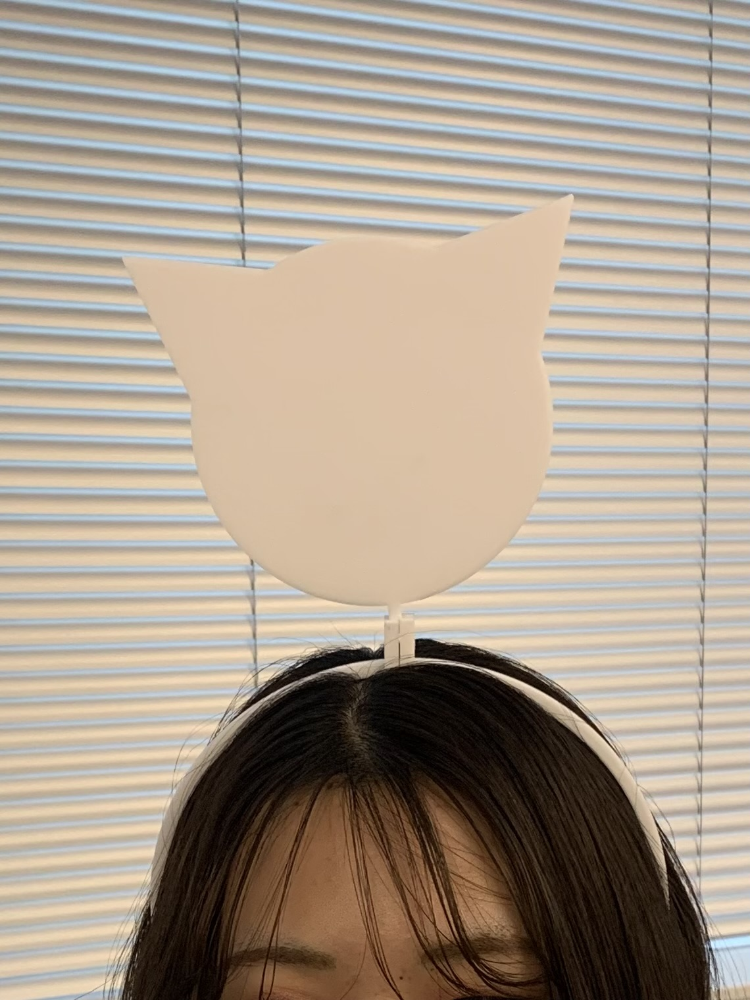

課題３
Design for Others
~人のためになるモノを作ろう~
【私たちが気になった日常の不思議】
ある授業で、広い教室で、授業を受ける学生数が少ないのに、毎回の授業で一番前の席に座る学生がいた。
私たちは広い教室で生徒数も少なければ、後ろに座ってしまいがちである。
だから、この人には一番前に座りたい理由があるのだと思った。
班で考えた。

目が悪い、普通に授業を真剣に聞きたいなど様々な意見が出たが、先生に顔を覚えられたいというのが隠れた理由なのではないかと考えた。
顔を覚えてもらうために目立とう！！
班員それぞれがその人にとって必要なもの、または、目立つためのカチューシャを作ることにした。

私のアイディア

あの子不思議だな、なんかいっつもかわいいのつけてるなと印象に残ってもらうために
【完成した作品】

ネコの形だけをつくり、顔などは自由に描けるようにした。
実際につけているところ

使用素材
3Dプリンター
班のメンバーのリンク
イシヅカアヤネ
KAHO
小松瑚舶
こうげん